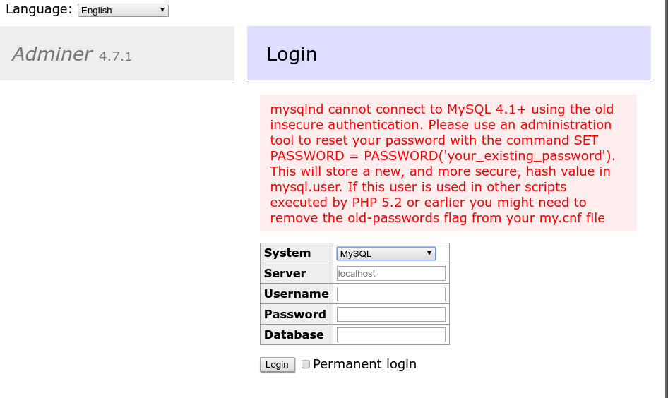
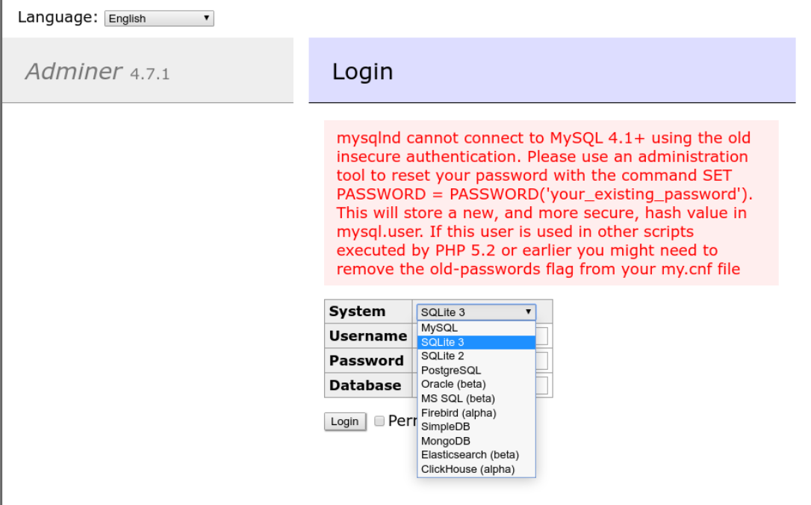
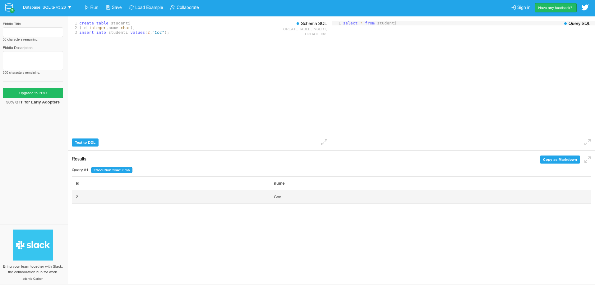

Manager de baze de date relationale
Editari colaborative de comenzi sql si generare cod sursa in PHP,Java
Adminer


Db-Fiddle

>Features
- Users log in specifying the destination server and providing the user name and password (which is stored during whole session)
- Basic functions: select database, select/edit tables, browse/insert/edit table rows
- Searching or sorting via multiple columns
- Editing of other database objects: views, triggers, events, stored procedures, processes, mysql variables, user permissions
- Text area for arbitrary SQL commands and storing these commands in command history
- Export of databases and tables (its structures and/or data) as a dump to output or a downloadable attachment
- User-friendly interface (extensive employment of JavaScript)
- Multiple language support (Arabic, Bengali, Catalan, Chinese, Czech, Dutch, English, Estonian, French, German, Greek, Hungarian, Italian, Indonesian, Japanese, Korean, Lithuanian, Persian, Polish, Portuguese, Romanian, Russian, Serbian, Slovak, Slovenian, Spanish, Tamil, Thai, Turkish, Ukrainian, Vietnamese)[5]
- SQL syntax highlighting
- Visual database/E-R schema editing
- Countermeasures against XSS, CSRF, SQL injection, session-stealing, …
- "Light-weight" – released in a form of a single file
- Support of CSS "skins", as well as many extensions